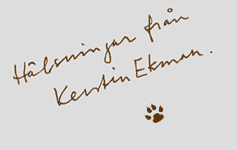

Ett minnesarbete i Valsjöbyn
På sommaren 1975 kom jag tillsammans med min man för första gången till Hotagen. Vi kom för att fiska och vi bodde i tält vid sjön Rörvattnet. Då visste vi inte att röding heter rör på jämtska och björk heter bjorsk. Det var mycket att lära sig. Fågeln som tiggde fräckt av vår matsäck kallades för röutjocksa. I fågelboken hette den lavskrika. Fisken nappade bäst på natten när luften tjocknade av nästan osynliga små knott som folk kallade svädarn. Betten sved som glödloppor från en eld. Det var mycket vi inte hade en aning om, allra minst att vi så småningom skulle bli bofasta här.
Landskapet och det säregna språket gjorde från början starkt intryck på mig. Så småningom lärde jag känna människorna, många av dem var inte mindre särpräglade, och jag fick lyssna till deras berättelser.
Under åren har jag hört mycket om hur det var att leva i Hotagen förr i världen. Men många hågkomster var på väg att försvinna. Vi fick med åren uppleva att flera av de gamla byborna som talat den vackraste jämtskan och som bäst mindes svunna tider gick bort. Jag ville gärna bevara så mycket som möjligt av deras minnen och gjorde därför ett datorprogram där vi kunde samla uppgifter och berättelser. Internet med dess möjligheter fanns inte på den tiden. Vårt program visades på datorer i affären och turistbyrån. Nu när Hotagens Minne kan visas på webben har jag kompletterat texterna med utdrag ur de böcker som jag skrivit under min tid där. Vi hade redan från början med citat från andra författare. De böcker jag skrivit från dessa trakter är Hunden, 1986, Händelser vid vatten, 1993, Urminnes tecken, 2000 och den trilogi vars sista del kom ut 2003 och som fått namnet Vargskinnet. Redan vid det första besöket fick jag idén till Rövarna i Skuleskogen och den skulle komma att förverkligas först 1988. Då var min man och jag sen länge bofasta i Valsjöbyn.
Att Hotagens Minne har blivit hemsida betyder att den som planerar att se sig om i Jämtlands fjälltrakter kan bekanta sig med bygden i förväg. Kanske har man sett Valsjöbyn i filmerna Hunden och Varg. De allra flesta kommer hit för att fiska och vandra i fjället. En gång var min man och jag också nykomlingar. Vi upptäckte att det fanns en rik historia och en levande bykultur i dessa trakter. Vi vill hjälpa andra att göra den upptäckten.
